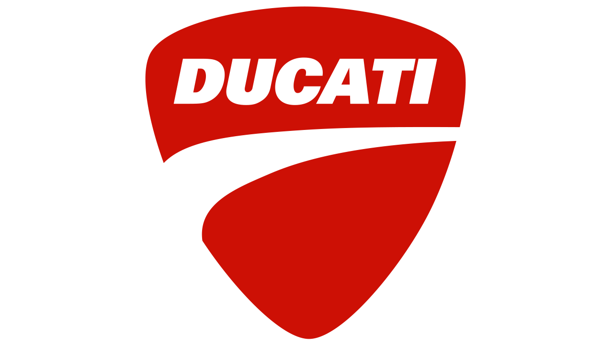

En este catálogo de motos, presentaremos algunos de los diseños más atractivos de 4 de las marcas más conocidas en el mundo del motociclismo.
La Yamaha Motor Company es uno de los grandes gigantes japoneses en la industria del motociclismo que fue fundada en el año 1955.
A partir de los años 70, Yamaha ya destacaba por hacer motos de competición. Actualmente, cuenta con 7 campeonatos de MotoGP conseguidos por los pilotos Valentino Rossi y Jorge Lorenzo.
PINCHA AQUÍ PARA DESCUBRIR ALGUNAS DE SUS MOTOS

Honda Motor Company es una empresa de origen japonés fundada en el año 1948. Esta compañía también se conoce por su influencia en el automovilismo, pero nos centraremos en su influencia en el mundo del motociclismo.
El Repsol Honda Team es desde 1994 el equipo oficial de Honda. Como equipo ha conseguido 10 campeonatos de MotoGP de la mano de distintos pilotos: Valentino Rossi, Nicky Hayden, Casey Stoner y Marc Márquez entre ellos.
PINCHA AQUÍ PARA DESCUBRIR ALGUNAS DE SUS MOTOS

Kawasaki Heavy Industries es otra de los grandes gigantes japoneses con gran impacto en el motociclismo. La empresa se fundó en 1896 y en 1949 apareció la división Kawasaki Heavy Industries Motorcycle & Engine.
A diferencia de las anteriores, Kawasaki destaca en las SuperBikes. De hecho, llevan 6 años consecutivos considerados los mejores constuctores de motos en SuperBikes. Destaca el piloto Jonathan Rea, que es quien lleva ganando estos 6 ultimos años.
PINCHA AQUÍ PARA DESCUBRIR ALGUNAS DE SUS MOTOS

Ducati Motor Holding es una empresa italiana fabricante de motocicletas, fundada en 1926 en Bolonia, pero no fue hasta 1952 cuando diseñaron su primera motocicleta. Actualmente se considera una de las marcas más importantes en el sector del motociclismo comercial y deportivo.
Ducati Corse es la división de equipo de carrera de Ducati que trata con la participación de la firma en carreras de motocicletas. Actualmente compite en MotoGP, el Campeonato Mundial de SuperBikes y otros campeonatos nacionales. Cuenta con un campeonato de MotoGP a manos de Casey Stoner y con nada menos que 17 campeonatos en SuperBikes.
PINCHA AQUÍ PARA DESCUBRIR ALGUNAS DE SUS MOTOS
Si no te acabas de decidir por ninguna... ¡no te preocupes! Te dejamos por aquí una comparativa de nuestras motos y unos cuantos consejos para que puedas hacer la mejor elección.
Además, si tienes cualquier duda nos puedes facilitar tus datos en este formulario y nos pondremos en contacto contigo.